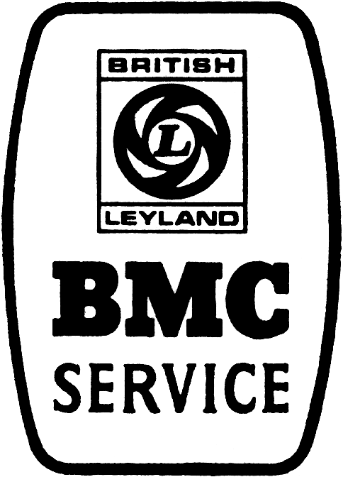
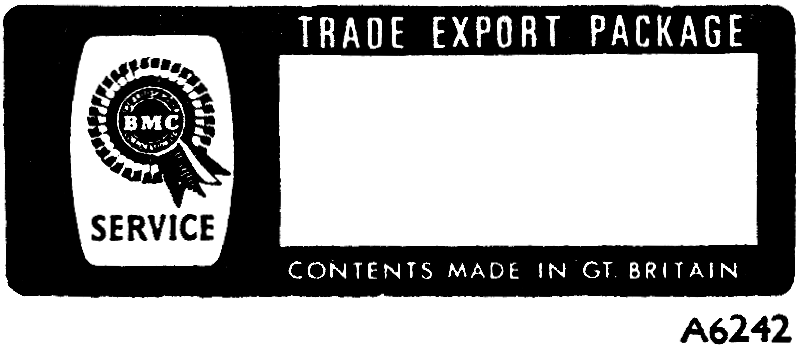

| BODY SERVICE PARTS LIST |
AKD 3524 |
|
IMPORTANT TO OWNERS

B.M.C. SERVICE PARTS
Owners are strongly advised to insist on the use of B.M.C. Genuine Parts. These may readily be identified by the label below and many are packed in characteristic cartons. They are available through any Distributor or Dealer, who can also provide details of the wide range of B.M.C. Approved Accessories not covered by this publication.

Replacement parts that are not of genuine B.M.C. manufacture cannot be relied upon to be of B.M.C. specification, material, and workmanship, and therefore B.M.C. cannot be expected to extend their Warranty to vehicles which have been fitted with parts not of their manufacture.
B.M.C. reserve the right to make changes or improvements in the construction or equipment of their products at any time.
In order to ensure prompt and correct execution of your orders it is essential to quote:
- The relative Unit Number, together with prefixes, suffixes, and specification reference where applicable:
e.g.: Axle, Body, Cab, Car, Chassis, Commission, Engine, and Gearbox Numbers, etc.
- The Part Number and description (prefix letters to Part Numbers must always be quoted).
- The quantity required, bearing in mind that the quantities shown are those used in the application actually illustrated on the Parts List in question. Sometimes only minimum packaged quantities are available. These packs may well contain more parts than are required for a single job; for details of packaged quantities, see the confidential Service Parts Price List.
- Always state the colour of carpets, painted items, trim items, etc.